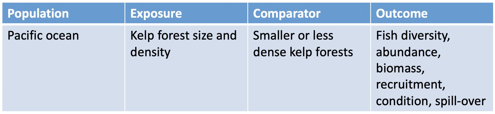
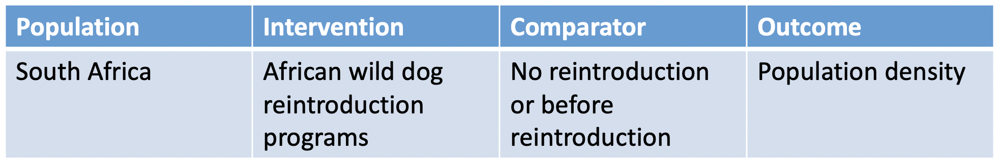
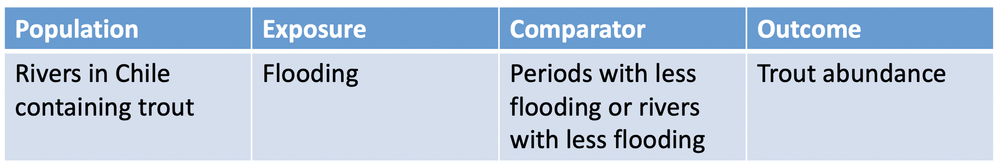

Systematic Review and Mapping Methods Course
Stakeholder Engagement and Question Formulation Pre-Course Material
Thanks for checking out the pre-course reading material. This page contains some preparatory reading and an exercise on question formulation that will introduce the importance of engaging with stakeholders, particularly during the planning stages of a review. It will also introduce the process of question formulation: going from a typically broad topic to a narrow, focused review question. Tools to define key elements of a review question will be discussed, along with the importance of stakeholder engagement during establishment of the question’s scope and any definitions of complex terms for ensuring a wide acceptance and endorsement of the review among all stakeholders. This session will include a practical exercise including the design of a review question, and formulating and defining the review question’s key elements.
During the physical course, we will spend more time on question formulation and particularly on stakeholder engagement, so for now, feel free to focus more on question formulation and breaking questions down into their key components. THis is described in the Guidance from the Collaboration for Environmental Evidence, linked to below.
This preparation will allow us to dive straight into your own real examples of systematic review/map questions during our course, and will give us more time to help you individually with your research.
Learning objectives:
- To appreciate the importance of stakeholder engagement in systematic reviews and maps
- To understand the key stages at which stakeholders can be engaged within a review, from setting of a review’s scope and definitions through to communication of a review’s results
- To understand how broad topics/concerns can be narrowed and focused into questions suitable for systematic review and systematic mapping
- To understand the meaning of a review question’s ‘key elements’ and be able to break down a question’s key elements
In preparation for the course, read the second chapter of the guidance from the Collaboration for Environmental Evidence here. We'll revisit sections of the CEE Guidance throughout the course. It focuses on environmental and conservation topics, but is subject agnostic, meaning that it's useful for other disciplines, too. Feel free to focus instead on the Cochrane Guidance if you work with healthcare topics. If you are particularly interested in stakeholder engagement, you may also want to read the Open Access (free) book Stakeholder Engagement in Environmental Evidence Synthesis.
Practical exercise
As we'll see during the physical course, it is vital to be able to break down a systematic review or map question into its key elements. in this practical exercise, take some time to break down the following example questions into their key elements using the template table provided.
If you're still unclear on what the key elements of a systematic review question are, please ensure that you have read section 2.3 of the CEE Guidelines, available here: http://www.environmentalevidence.org/guidelines/section-2.
- How does the size and density of kelp forest affect fisheries in the Pacific?
- Are reintroduction programs effective for increasing populations of African wild dogs in South Africa?
- What is the impact of flooding on abundance of trout in Chilean rivers?
Use the following table as a template to help you think about the main parts of each question:
a) How does the size and density of kelp forest affect fisheries in the Pacific?
b) Are reintroduction programs effective for increasing populations of African wild dogs in South Africa?
c) What is the impact of flooding on abundance of trout in Chilean rivers?
How did that go? Hopefully, you were able to come to similar conclusions. In some cases, it's not black-and-white when it comes to what is an intervention and what is the population, and it can be quite challenging to separate all of the elements. In other cases, we may not know exactly what we're looking for for all of the elements: for example, we may not yet know what interventions we will find, but instead, we want to identify them from the literature. And don't worry if you disagreed with the model answers - the process becomes easier with practice and experience!
Move to the next module!